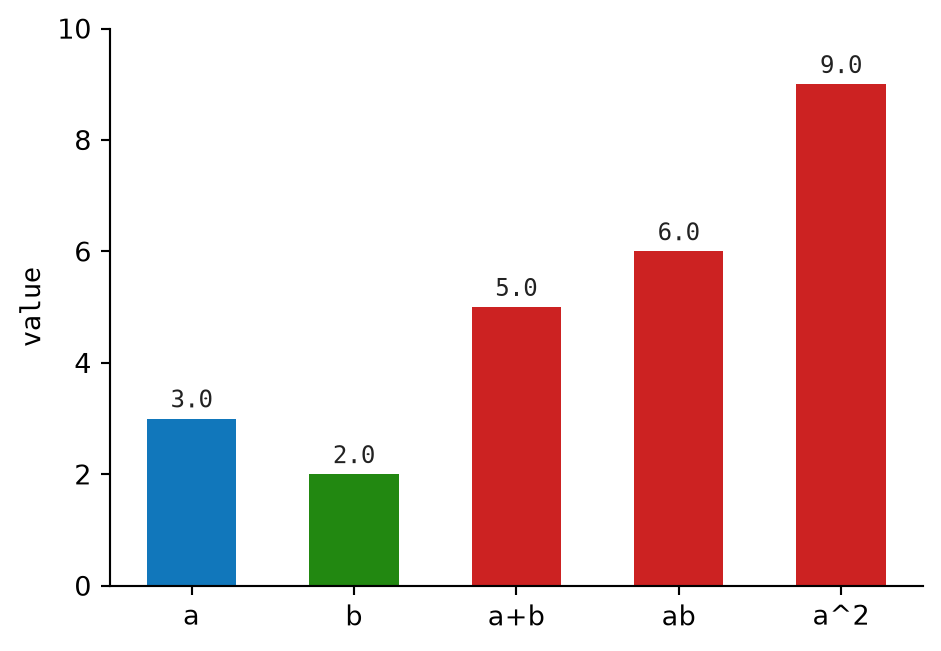
2 Notation and Definitions
This chapter is a compact reference for the core math used at the start of the book. It focuses on notation, definitions, and small numerical examples.
2.1 Scalars
A scalar is a single number. Examples include \(-2\), \(0\), \(0.5\), and \(3.14\).
Scalars can be added, subtracted, multiplied, divided, squared, and compared. They are the simplest objects in this chapter. Vectors and matrices are built by arranging scalars into larger shapes.
Math Minute – Variable
A variable is a name for a value. In \(x = 3.0\), the variable is \(x\) and its value is \(3.0\). In formulas, variables let us describe a whole pattern without writing a separate equation for every possible number.
2.1.1 Scalar Operations
For two scalars \(a = 3.0\) and \(b = 2.0\):
\[ a + b = 5.0 \]
\[ ab = 6.0 \]
\[ a^2 = 9.0 \]
2.2 Capital Sigma and Capital Pi
Capital sigma \(\sum\) means “add a sequence of terms.” Capital pi \(\prod\) means “multiply a sequence of terms.”
Math Minute – Index Variable
An index variable counts through positions in a sequence. In \(\sum_{i=1}^{4} x_i\), the index variable is \(i\). It starts at \(1\), then takes the values \(2\), \(3\), and \(4\).
2.2.1 Capital Sigma: Sum
The expression:
\[ \sum_{i=1}^{4} x_i \]
means:
\[ x_1 + x_2 + x_3 + x_4 \]
For \(x = [2, 3, 5, 7]\):
\[ \sum_{i=1}^{4} x_i = 2 + 3 + 5 + 7 = 17 \]
Math Minute – Subscript
A subscript is the small label written below and to the right of a symbol. In \(x_i\), the subscript \(i\) selects one entry from the sequence \(x\). So \(x_1\) means “the first entry of \(x\).”
2.2.2 Capital Pi: Product
The expression:
\[ \prod_{i=1}^{4} x_i \]
means:
\[ x_1 x_2 x_3 x_4 \]
For \(x = [2, 3, 5, 7]\):
\[ \prod_{i=1}^{4} x_i = 2 \cdot 3 \cdot 5 \cdot 7 = 210 \]
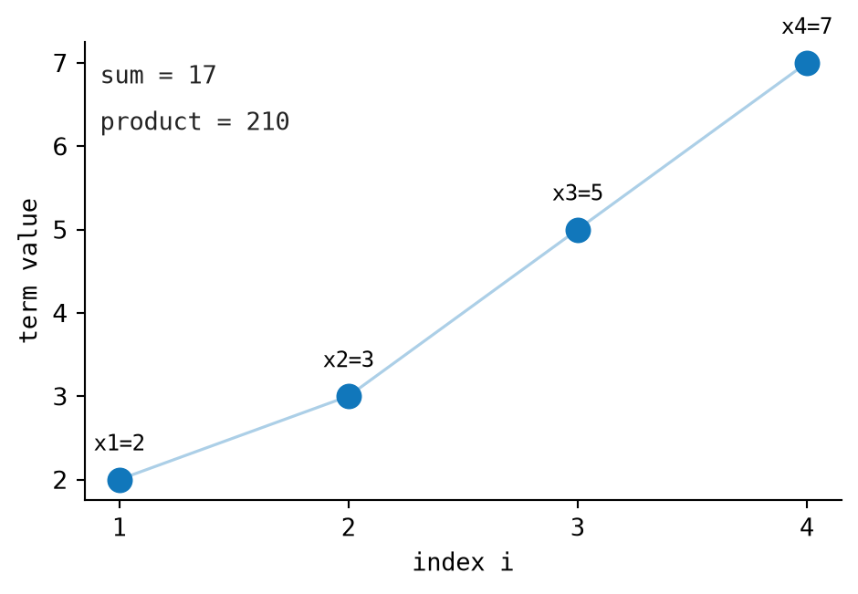
2.3 Vectors
A vector \(v \in \mathbb{R}^n\) is an ordered list of \(n\) real numbers: \(v = [v_1, v_2, \ldots, v_n]\). Vectors store many related measurements as one object. Once values are written as vectors, we can add, scale, compare, and transform them with ordinary arithmetic.
Math Minute — Element Of
The symbol \(\in\) means “is an element of” or, more casually, “is in.” So \(v \in \mathbb{R}^n\) says that \(v\) is one item from the set \(\mathbb{R}^n\). In the above definition, \(v\) is a vector with \(n\) real-number components.
Math Minute — Real Number
A real number is any ordinary number on the number line: \(-2\), \(0\), \(0.5\), \(\sqrt{2}\), \(\pi\), and so on. The notation \(\mathbb{R}\) means “the set of all real numbers.” So \(\mathbb{R}^n\) means “all vectors with \(n\) real-number components.”
Math Minute – Vector Shape and Indexing
The shape of a vector is its length. If \(v \in \mathbb{R}^n\), then \(v\) has shape \(n\). The notation \(v_i\) means “entry \(i\) of vector \(v\).” The notation \(v_n\) means “the last entry when the vector has length \(n\).”
In Python, the book represents a vector as a list of floating-point numbers:
Vector = list[float]This simple representation is enough for the small implementations in the book. Packages like NumPy provide their own vector type, usually as an ndarray, with faster arithmetic, compact memory layout, and many built-in operations. For larger numerical programs, you would usually use NumPy, PyTorch, JAX, or another tensor library instead.
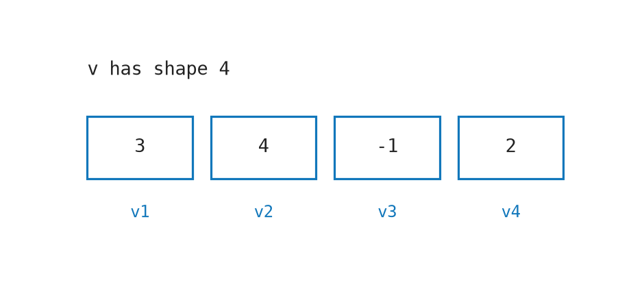
2.3.1 Vector Addition
When two vectors have the same length, we can add them by adding matching positions. The first component adds to the first component, the second to the second, and so on:
\[ u + v = [u_1+v_1, u_2+v_2, \ldots] \]
The Python version follows that sentence directly: walk through both vectors together and add each pair.
def add_vectors(left: Vector, right: Vector) -> Vector:
return [a + b for a, b in zip(left, right)]For example, take \(u = [3.0, 4.0]\) and \(v = [1.0, -2.0]\). The first components give \(3.0 + 1.0 = 4.0\), and the second components give \(4.0 + (-2.0) = 2.0\). So:
\[ u + v = [3.0+1.0, 4.0+(-2.0)] = [4.0, 2.0] \]
2.3.2 Scalar Multiplication
A scalar is a single number. Multiplying a vector by a scalar stretches or shrinks the whole vector without changing how many components it has:
\[ c\cdot v = [cv_1, cv_2, \ldots] \]
In code, this means multiplying every value in the list by the same scalar.
def scale_vector(vector: Vector, scalar: float) -> Vector:
return [scalar * value for value in vector]For \(u = [3.0, 4.0]\), multiplying by \(2.0\) doubles both components:
\[ 2.0 \cdot u = [6.0, 8.0] \]
2.3.3 L2 Norm
The L2 norm is the length of a vector. For a two-dimensional vector, this is the Pythagorean theorem; for longer vectors, the same idea extends across all components:
\[ \|v\| = \sqrt{v_1^2 + v_2^2 + \ldots + v_n^2} \]
The implementation squares every component, adds the squares, then takes the square root.
def vector_norm(vector: Sequence[float]) -> float:
return math.sqrt(sum(value * value for value in vector))For \(u = [3.0, 4.0]\), the length is:
\[ \|u\| = \sqrt{3.0^2 + 4.0^2} = \sqrt{9.0+16.0} = 5.0 \]
2.3.4 Unit Vector
A unit vector keeps the direction of the original vector but scales its length to 1. To get one, divide the vector by its own norm:
\[ \hat{v} = v / \|v\| \]
The helper below combines the two earlier operations: compute the norm, then scale by its reciprocal.
def unit_vector(vector: Vector) -> Vector:
return scale_vector(vector, 1.0 / vector_norm(vector))For \(u = [3.0, 4.0]\), the norm is \(5.0\), so each component is divided by \(5.0\):
\[ [3.0/5.0, 4.0/5.0] = [0.6, 0.8] \]
Figure 2.4 shows vector addition and the L2 norm in 2D.
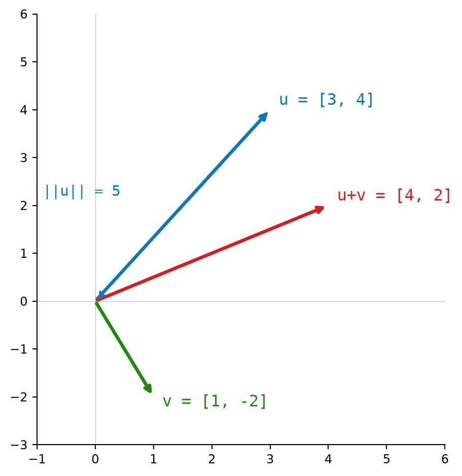
2.4 Dot Product
The dot product (also called inner product) combines two vectors into one scalar. It is the basic operation for asking, “how aligned are these two vectors?”
2.4.1 Dot Product
The dot product multiplies matching components and then adds the results:
\[ u \cdot v = \sum_{i=1}^{n} u_i v_i = u_1 v_1 + u_2 v_2 + \ldots + u_n v_n \]
That is also the most direct way to write it in Python. The zip pairs matching components, and sum adds the pairwise products.
def dot(left: Sequence[float], right: Sequence[float]) -> float:
return sum(a * b for a, b in zip(left, right))With \(u = [3.0, 4.0, 0.0]\) and \(v = [1.0, -2.0, 5.0]\), the matching products are \(3.0 \cdot 1.0\), \(4.0 \cdot (-2.0)\), and \(0.0 \cdot 5.0\). Adding them gives:
\[ u \cdot v = (3.0)(1.0) + (4.0)(-2.0) + (0.0)(5.0) = 3.0 - 8.0 + 0.0 = -5.0 \]
The sign matters. A positive dot product means the vectors point somewhat in the same direction. A negative dot product means they point somewhat against each other. If \(u \cdot v = 0\), the vectors are orthogonal (perpendicular).
2.4.2 Cosine Similarity
The dot product mixes two things: vector length and direction. Cosine similarity removes the length part so we can compare direction alone. Starting from the geometric form:
\[ u \cdot v = \|u\| \|v\| \cos\theta \]
we solve for \(\cos\theta\):
\[ \cos\theta = \frac{u \cdot v}{\|u\|\|v\|} \]
The implementation is just that formula: dot product divided by the two vector lengths.
def cosine_similarity(left: Sequence[float], right: Sequence[float]) -> float:
return dot(left, right) / (vector_norm(left) * vector_norm(right))Using the same \(u\) and \(v\) as above, \(\|u\| = 5.0\) and \(\|v\| = \sqrt{30.0}\). Since the dot product is \(-5.0\), the cosine similarity is:
\[ \frac{u \cdot v}{\|u\|\|v\|} = \frac{-5.0}{5.0\sqrt{30.0}} \approx -0.183 \]
The value is below zero, so the vectors point in moderately opposite directions.
Figure 2.5 shows the dot product as a scalar projection in 2D.
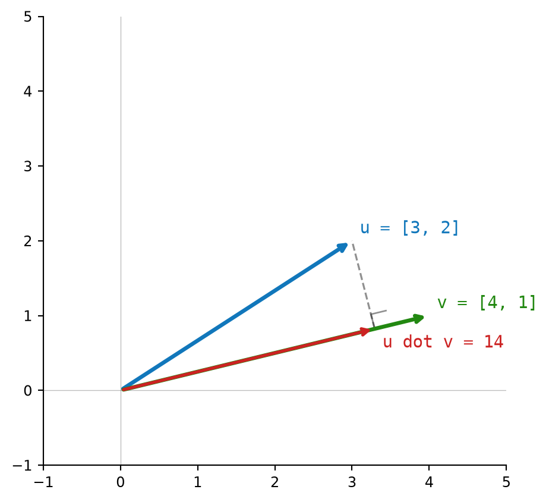
2.5 Matrix Multiplication
A matrix is a rectangular grid of numbers. Matrices make it possible to organize many vectors or many linear equations at once. Matrix multiplication combines rows from one matrix with columns from another. The book represents a matrix as a list of rows, where each row is a list of floats:
Matrix = list[list[float]]Math Minute – Matrix Shape and Indexing
A matrix with \(m\) rows and \(n\) columns has shape \(m \times n\). The notation \(A \in \mathbb{R}^{m \times n}\) means every entry of \(A\) is a real number, and \(A\) has \(m\) rows and \(n\) columns. The notation \(A_{ij}\) means “the entry in row \(i\), column \(j\) of matrix \(A\).”
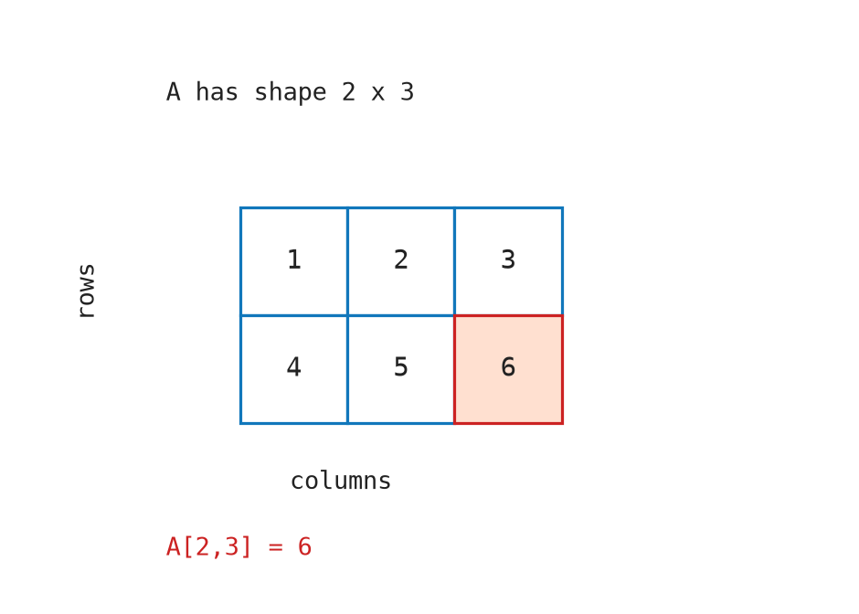
2.5.1 Transpose
Transposing a matrix swaps rows and columns. The first row becomes the first column, the second row becomes the second column, and so on. If \(A \in \mathbb{R}^{m \times n}\), then \(A^T \in \mathbb{R}^{n \times m}\).
In Python, zip(*matrix) groups together the first item from every row, then the second item from every row, and so on. Converting each group back to a list gives the transposed rows.
def transpose(matrix: Matrix) -> Matrix:
return [list(col) for col in zip(*matrix)]For:
\[ A = \begin{bmatrix} 1.0 & 2.0 \\ 3.0 & 4.0 \end{bmatrix} \]
the transpose is:
\[ A^T = \begin{bmatrix} 1.0 & 3.0 \\ 2.0 & 4.0 \end{bmatrix} \]
2.5.2 Matrix Multiplication
Matrix multiplication combines rows from the left matrix with columns from the right matrix. Given \(A \in \mathbb{R}^{m \times k}\) and \(B \in \mathbb{R}^{k \times n}\), their product \(C = AB\) has shape \(m \times n\), and each entry is:
\[ C_{ij} = \sum_{r=1}^{k} A_{ir} B_{rj} \]
That equation says: take row \(i\) from \(A\), take column \(j\) from \(B\), and compute their dot product. The implementation transposes the right matrix first so its columns become easy to iterate over as rows.
def matrix_multiply(left: Matrix, right: Matrix) -> Matrix:
right_t = transpose(right)
return [[dot(row, col) for col in right_t] for row in left]For:
\[ A = \begin{bmatrix} 1.0 & 2.0 \\ 3.0 & 4.0 \end{bmatrix} \]
and:
\[ B = \begin{bmatrix} 5.0 & 6.0 \\ 7.0 & 8.0 \end{bmatrix} \]
the four output cells are:
\[ C_{00} = 1.0 \cdot 5.0 + 2.0 \cdot 7.0 = 19.0 \]
\[ C_{01} = 1.0 \cdot 6.0 + 2.0 \cdot 8.0 = 22.0 \]
\[ C_{10} = 3.0 \cdot 5.0 + 4.0 \cdot 7.0 = 43.0 \]
\[ C_{11} = 3.0 \cdot 6.0 + 4.0 \cdot 8.0 = 50.0 \]
So:
\[ AB = \begin{bmatrix} 19.0 & 22.0 \\ 43.0 & 50.0 \end{bmatrix} \]
Figure 2.7 illustrates how each output cell is a dot product of a row with a column.
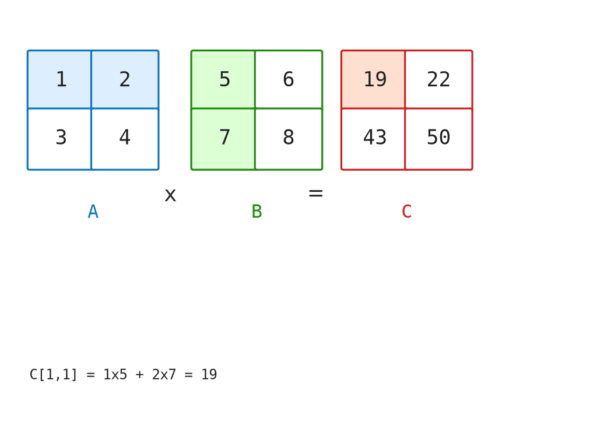
2.6 Softmax
The softmax function turns arbitrary real numbers into probabilities. The input numbers are called logits. The output values are all positive and sum to 1.
2.6.1 Vector Softmax
Softmax exponentiates each logit and divides by the total exponentiated mass:
\[ \text{softmax}(z)_i = \frac{e^{z_i}}{\sum_{j} e^{z_j}} \]
In code, we subtract the maximum logit before exponentiating. This does not change the final probabilities, because the same constant shift appears in the numerator and denominator. It does prevent very large exponentials from overflowing.
\[ \text{softmax}(z)_i = \frac{e^{z_i - \max(z)}}{\sum_{j} e^{z_j - \max(z)}} \]
def softmax(logits: Sequence[float]) -> Vector:
max_logit = max(logits)
exp_values = [math.exp(value - max_logit) for value in logits]
total = sum(exp_values)
return [value / total for value in exp_values]For \(z = [2.0, 1.0, 0.1]\), the maximum is \(2.0\), so the shifted values are \([0.0, -1.0, -1.9]\). After exponentiating, we get approximately \([1.000, 0.368, 0.150]\), whose sum is \(1.518\). Dividing each value by that sum gives:
\[ \text{softmax}(z) \approx [0.659, 0.242, 0.099] \]
The largest logit gets the largest probability, but the smaller logits still receive nonzero probability.
2.6.2 Row-wise Softmax
Sometimes the input is a matrix of scores. Each row can be normalized into its own probability distribution. Row-wise softmax applies the vector softmax independently to every row.
def softmax_rows(matrix: Matrix) -> Matrix:
return [softmax(row) for row in matrix]After this step, each row sums to 1.
Figure 2.8 shows how softmax maps raw logits to a probability distribution.
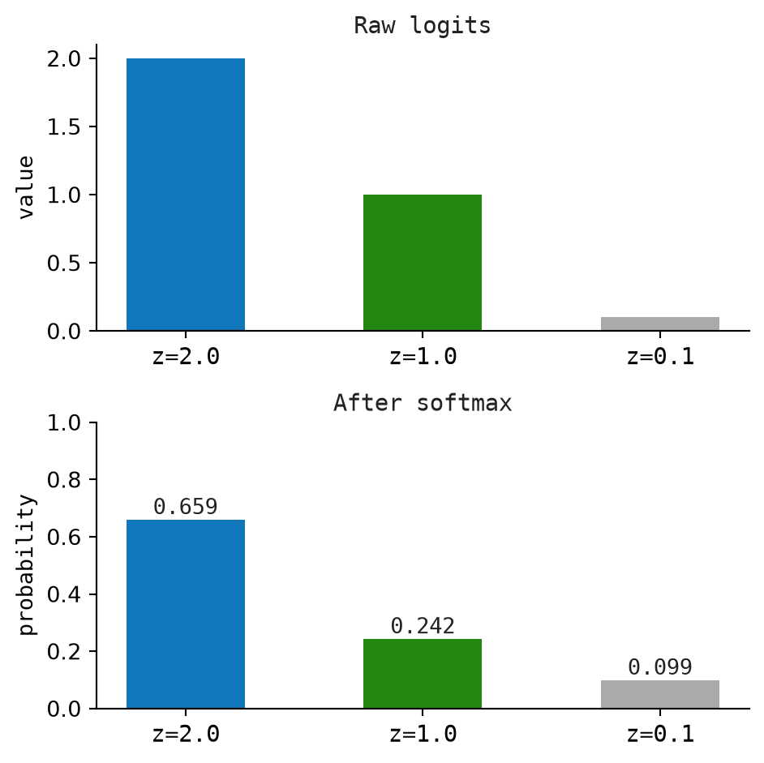
2.7 Logarithm and Exponential
The natural exponential \(e^x\) and natural logarithm \(\ln x\) are inverse operations:
\[ e^{\ln x} = x \quad \text{and} \quad \ln(e^x) = x \]
These functions convert between additive and multiplicative scales. They are useful whenever growth, decay, ratios, or repeated multiplication need to be written on an additive scale.
2.7.1 Natural Exponential
The natural exponential raises \(e\) to a power:
\[ \exp(x) = e^x \]
In Python, this is math.exp.
def natural_exp(value: float) -> float:
return math.exp(value)Two anchor values are worth remembering. If the exponent is \(0.0\), the result is \(1.0\). If the exponent is \(1.0\), the result is \(e\):
\[ e^{0.0} = 1.0 \]
\[ e^{1.0} \approx 2.718 \]
2.7.2 Natural Logarithm
The natural logarithm asks the reverse question: what power of \(e\) gives this value?
\[ \ln x = y \quad \text{means} \quad e^y = x \]
In Python, this is math.log.
def natural_log(value: float) -> float:
return math.log(value)Some useful values:
\[ \ln(1.0) = 0.0 \]
\[ \ln(e) = 1.0 \]
\[ \ln(0.5) \approx -0.693 \]
\[ \ln(0.1) \approx -2.303 \]
For inputs between \(0\) and \(1\), the natural logarithm is negative. Negating it gives a positive value that grows as the input moves closer to zero, as shown in Figure 2.9. For example:
\[ -\ln(0.01) = 4.605 \]
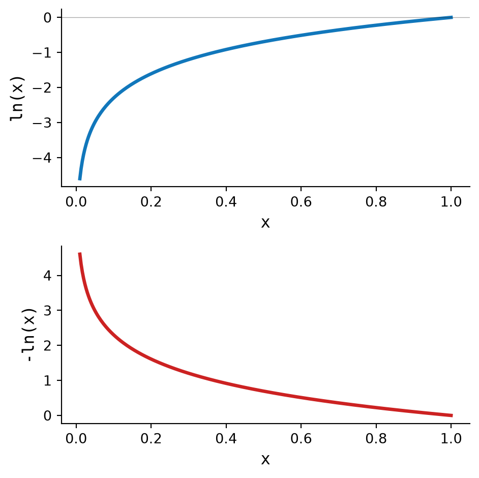
Two identities appear often when simplifying logarithms:
\[ \ln(ab) = \ln a + \ln b \]
\[ \ln(a^n) = n \ln a \]
2.8 Mean and Variance
Mean and variance summarize a vector of numbers. They tell us where the values are centered and how spread out they are.
2.8.1 Mean
The mean is the average value. Add all values, then divide by how many values there are:
\[ \mu = \frac{1}{n}\sum_{i=1}^n x_i \]
The implementation is just that calculation.
def mean(values: Sequence[float]) -> float:
return sum(values) / len(values)For \(x = [2.0, 4.0, 4.0, 4.0, 5.0, 5.0, 7.0, 9.0]\), the sum is \(40.0\) and there are \(8\) values. So:
\[ \mu = \frac{40.0}{8.0} = 5.0 \]
2.8.2 Variance
Variance measures how spread out the values are. First subtract the mean from each value. Then square those deviations so negative and positive deviations do not cancel out. Finally, average the squared deviations:
\[ \sigma^2 = \frac{1}{n}\sum_{i=1}^n (x_i - \mu)^2 \]
The Python helper computes the mean first, then follows the formula.
def variance(values: Sequence[float]) -> float:
avg = mean(values)
return sum((value - avg) ** 2 for value in values) / len(values)Continuing with \(x = [2.0, 4.0, 4.0, 4.0, 5.0, 5.0, 7.0, 9.0]\), the mean is \(5.0\). The squared deviations are:
\[ 9.0, 1.0, 1.0, 1.0, 0.0, 0.0, 4.0, 16.0 \]
Their average is:
\[ \sigma^2 = \frac{9.0+1.0+1.0+1.0+0.0+0.0+4.0+16.0}{8.0} = 4.0 \]
2.8.3 Standard Deviation
Standard deviation puts variance back on the original scale by taking the square root:
\[ \sigma = \sqrt{\sigma^2} \]
def standard_deviation(values: Sequence[float]) -> float:
return math.sqrt(variance(values))In this example, the variance is \(4.0\), so the standard deviation is:
\[ \sigma = \sqrt{4.0} = 2.0 \]
Figure 2.10 illustrates the example data with mean and standard deviation marked.
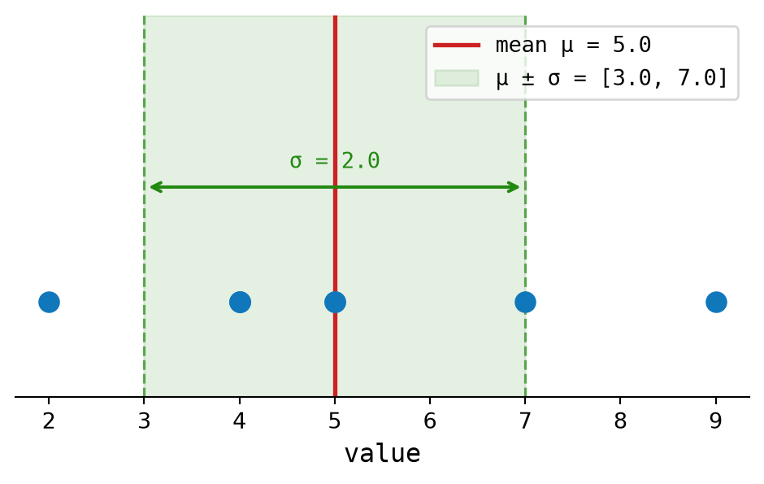
2.9 Derivative
A derivative measures how fast one value changes as another value changes. For a function \(f(x)\), the derivative is written:
\[ \frac{df}{dx} \]
This reads as “the derivative of \(f\) with respect to \(x\).” It tells us the slope of the function at a particular input.
Math Minute – Function
A function maps an input to an output. If \(f(x) = x^2\), then \(f(3) = 9\). The input is \(x\) and the output is \(f(x)\).
Math Minute – Slope
Slope means “change in vertical value divided by change in horizontal value.” Between two points, slope is: \[ \frac{\Delta y}{\Delta x} \] A derivative is the slope when the two points get infinitely close together.
2.9.1 Example
For:
\[ f(x) = x^2 \]
the derivative is:
\[ \frac{df}{dx} = 2x \]
At \(x = 3\), the slope is:
\[ 2x = 2 \cdot 3 = 6 \]
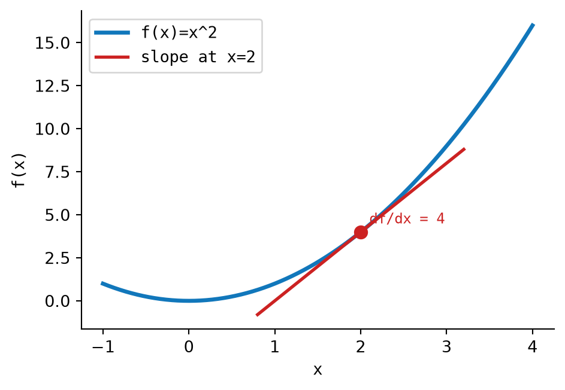
2.10 Key Takeaways
This chapter defined a compact mathematical toolkit.
| Concept | Main idea |
|---|---|
| Scalar | A single number |
| Capital Sigma/Pi | Compact notation for repeated addition or multiplication |
| Vector | An ordered list of numbers |
| Dot product | A scalar measure of alignment between two vectors |
| Matrix multiply | Row-by-column dot products arranged into a new matrix |
| Softmax | A way to convert real-valued scores into probabilities |
| Logarithm | The inverse of exponentiation |
| Mean/Variance | Measurements of center and spread |
| Derivative | The local rate of change of a function |
Together, these tools cover the notation and arithmetic used throughout the examples in this chapter.